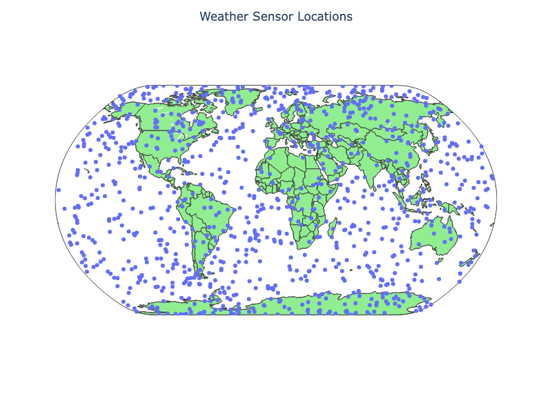
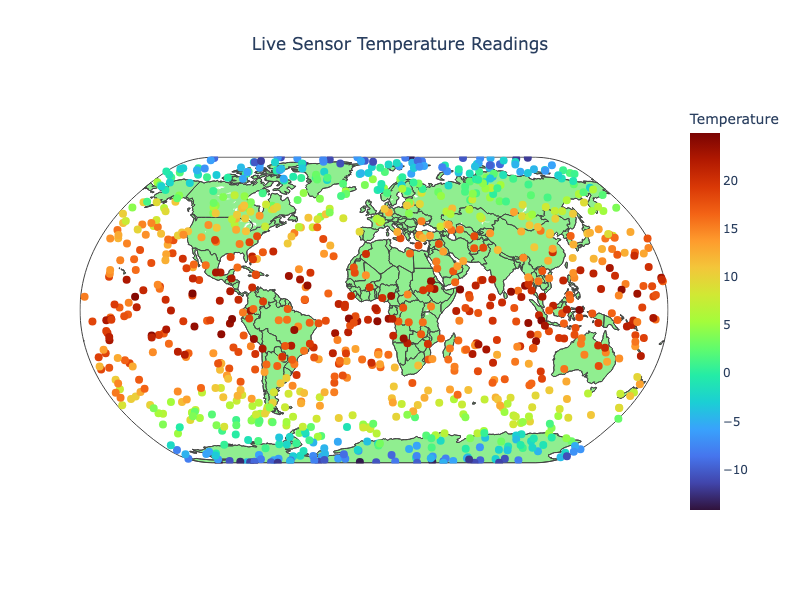

Chapter 8: Apache Kafka
Introduction
In this chapter, we’ll explore a powerful feature of SingleStore called Pipelines. Pipelines allow vast quantities of data to be ingested in parallel into a SingleStore database. To illustrate this, we’ll walk through an example that combines Pipelines with Apache Kafka.
Our first example focuses on managing streaming data from sensors, a common real-world use case. We’ll simulate globally distributed temperature sensors that generate continuous readings. These readings will be ingested into SingleStore through Confluent Cloud, using a Python application that implements a Producer-Consumer model with SingleStore Pipelines.
In the second example, we’ll reverse the direction of data flow and use SingleStore as a Producer. Here, simulated stock market tick data will be published from SingleStore to Confluent Cloud and consumed by a Python program. While this functionality is different from Pipelines, it demonstrates how SingleStore can also push outbound messages to a Kafka cluster, extending its role beyond ingestion into active data distribution.
We’ll start by creating a free account on Confluent Cloud and provisioning a Kafka cluster using the Basic (Free) Tier on AWS. Once the cluster is ready, we’ll record the address of the bootstrap server, then generate an API key and secret for authentication. Next, we’ll create two topics:
- iot-temperatures
- tick-data
using the default settings. Finally, we’ll add the bootstrap server address to the SingleStore firewall to allow communication between the two systems.
Real-Time IoT Sensor Consumer
Create the Database and Tables
In the SingleStore Portal, we’ll use the SQL Editor to create a new database. Let’s call this sensor_readings_db, as follows:
CREATE DATABASE IF NOT EXISTS sensor_readings_db;
We’ll also create two tables, as follows:
USE sensor_readings_db;
DROP TABLE IF EXISTS sensors;
CREATE TABLE IF NOT EXISTS sensors (
id INT PRIMARY KEY,
name VARCHAR (50),
latitude DOUBLE,
longitude DOUBLE
);
DROP TABLE IF EXISTS temperatures;
CREATE TABLE IF NOT EXISTS temperatures (
id INT,
temperature DOUBLE,
timestamp BIGINT,
PRIMARY KEY(id, timestamp)
);
We’ll upload data for 1,000 sensors into the sensors table. The sensors are globally distributed and our dataset contains four columns consisting of a unique id, a name, latitude and longitude.
We’ll stream data into the temperatures table. This table contains three columns consisting of a unique id, a temperature reading and a timestamp.
Fill out the Notebook
Let’s now create a new Python notebook. We’ll call it data_loader_for_kafka.
We’ll create a new DataFrame, as follows:
sensor_csv_url = ...
sensor_df = pd.read_csv(sensor_csv_url)
This reads the sensor CSV file and creates a DataFrame called sensor_df.
A quick plot shows the global random sensor distribution:
fig = px.scatter_geo(
sensor_df,
lat = "latitude",
lon = "longitude",
hover_name = "id",
width = 800,
height = 600
)
fig.update_layout(
title = "Weather Sensor Locations",
title_x = 0.5,
geo = dict(
showland = True,
landcolor = "LightGreen",
showcountries = True,
projection_type = "natural earth"
)
)
fig.show()
This will produce the image shown in Figure 8-1.

Figure 8-1. Weather Sensor Locations.
We are now ready to write the DataFrame to SingleStore. First, we’ll create a connection:
from sqlalchemy import *
db_connection = create_engine(connection_url)
Next, we’ll ensure that the table is empty:
with db_connection.begin() as conn:
conn.execute(text("TRUNCATE TABLE sensors;"))
Finally, we’ll write the DataFrame to SingleStore:
sensor_df.to_sql(
"sensors",
con = db_connection,
if_exists = "append",
index = False,
chunksize = 1000
)
This will write the DataFrame to the sensors table in the sensor_readings_db database.
Create Kafka Producer
Now let’s create a new notebook called kafka_producer.
First, we’ll create a Kafka configuration, as follows:
conf = {
"bootstrap.servers": "<bootstrap_server>",
"security.protocol": "SASL_SSL",
"sasl.mechanisms": "PLAIN",
"sasl.username": "<api_key>",
"sasl.password": "<api_secret>",
"log_level": 0
}
topic = "iot-temperatures"
We’ll replace <bootstrap_server>, <api_key> and <api_secret> with the values we previously saved.
Next, we’ll create a connection to SingleStore:
from sqlalchemy import *
db_connection = create_engine(connection_url)
Now we’ll query the database to find the range of unique sensor identifiers, so we can select one randomly from this range to generate a temperature reading:
counter = 0
print_every = 10
query = "SELECT MIN(id) AS min_id, MAX(id) AS max_id FROM sensors;"
min_id, max_id = pd.read_sql(query, db_connection).iloc[0]
To provide some realism for the temperature reading returned by a sensor, we’ll use a helper function that will generate a temperature reading based upon the latitude of a sensor:
def generate_temperature(latitude: float) -> float:
"""
Generate a temperature based on latitude:
- Equator (lat ~ 0) -> hottest
- Poles (lat ~ +/- 90) -> coldest
Adds some random fluctuation.
"""
base_temp = 30 * cos(radians(latitude)) - 10
temp = base_temp + random.uniform(-5, 5)
return round(temp, 2)
We should also check if a message was correctly delivered:
def delivery_report(err, msg):
if err:
print(f"Delivery failed: {err}")
else:
print(f"Delivered to {msg.topic()} [{msg.partition()}] @ offset {msg.offset()}")
Now, we’ll select a random sensor, create a record with the sensor identifier, a temperature reading and a timestamp and wrap it up in a JSON format:
def _produce_single_event():
global counter
sensor_id = random.randint(min_id, max_id)
query = f"SELECT id, latitude FROM sensors WHERE id = {sensor_id};"
sensor = pd.read_sql(query, db_connection).iloc[0]
record = {
"id": int(sensor["id"]),
"temperature": generate_temperature(sensor["latitude"]),
"timestamp": int(datetime.utcnow().timestamp() * 1000)
}
producer.produce(
topic = topic,
key = str(record["id"]),
value = json.dumps(record),
callback = delivery_report
)
producer.poll(0)
counter += 1
if counter % print_every == 0 or counter == 1:
clear_output(wait = True)
print(f"Produced {counter} records, latest: {record}")
By default, we’ll generate 20 messages. However, we can also create an endless loop by passing the following helper function the value -1:
def produce_events(num_messages = 20, interval = 0.2):
try:
if num_messages == -1:
print("Producing events endlessly ...")
while True:
_produce_single_event()
time.sleep(interval)
else:
for _ in range(num_messages):
_produce_single_event()
time.sleep(interval)
except KeyboardInterrupt:
print("Producer stopped by user.")
finally:
producer.flush(timeout = 10)
print(f"Finished producing events (total {counter})")
Finally, we’ll generate some messages continuously, until interrupted:
producer = Producer(conf)
produce_events(num_messages = -1)
Example output:
Produced 2740 records, latest: {'id': 480, 'temperature': 13.49, 'timestamp': 1756309773989}
Delivered to iot-temperatures [5] @ offset 496
Delivered to iot-temperatures [5] @ offset 497
Delivered to iot-temperatures [1] @ offset 499
Delivered to iot-temperatures [2] @ offset 492
Delivered to iot-temperatures [3] @ offset 411
Delivered to iot-temperatures [1] @ offset 500
Delivered to iot-temperatures [1] @ offset 501
Delivered to iot-temperatures [5] @ offset 498
Producer stopped by user.
Delivered to iot-temperatures [2] @ offset 493
Finished producing events (total 2748)
Create Kafka Consumer
Our messages are being streamed to Confluent Cloud and we’ll now create a way to consume them in SingleStore. This is easily achieved using Pipelines. Using the SQL Editor, we’ll first drop the Pipeline if it already exists:
DROP PIPELINE IF EXISTS kafka_confluent_cloud;
and then create the Pipeline, as follows:
CREATE PIPELINE kafka_confluent_cloud AS
LOAD DATA KAFKA '<bootstrap_server>/iot-temperatures'
CONFIG '{
"security.protocol" : "SASL_SSL",
"sasl.mechanism" : "PLAIN",
"sasl.username" : "<api_key>"
}'
CREDENTIALS '{
"sasl.password" : "<api_secret>"
}'
SKIP DUPLICATE KEY ERRORS
INTO TABLE temperatures
FORMAT JSON
( id <- id, temperature <- temperature, timestamp <- timestamp );
We’ll replace <bootstrap_server>, <api_key> and <api_secret> with the values we previously saved. Since we are using JSON to produce the messages, we need to provide the mapping of the JSON fields to the fields in the temperatures table.
Before starting the Pipeline, we’ll test it:
TEST PIPELINE kafka_confluent_cloud LIMIT 1;
Example output:
+------+-------------+---------------+
| id | temperature | timestamp |
+------+-------------+---------------+
| 821 | 21.82 | 1756309088240 |
+------+-------------+---------------+
Then we’ll start the Pipeline to ingest the messages:
START PIPELINE kafka_confluent_cloud;
After a short time, we’ll run the following command to check if the data are being correctly streamed into the table:
SELECT COUNT(*) FROM temperatures;
Create a Dashboard
We’ll create a simple dashboard that shows the sensors on a map, similar to Figure 8-1, but with the sensors and dashboard updated every few seconds.
Let’s create a new notebook called kafka_dashboard.
First, we’ll create a connection to SingleStore:
from sqlalchemy import *
db_connection = create_engine(connection_url)
Next, we’ll set the refresh rate and that we are working with 1,000 sensors:
refresh_interval = 5
num_records = 1000
We’ll create a helper function to get the latest sensor data:
def get_latest_sensor_data():
"""
Query latest temperature for each sensor and return as a DataFrame
with timestamp converted to pandas datetime.
"""
df = pd.read_sql("""
SELECT t.id, t.temperature, t.timestamp, s.latitude, s.longitude
FROM sensors s
JOIN temperatures t
ON t.id = s.id
AND t.timestamp = (
SELECT MAX(timestamp)
FROM temperatures
WHERE id = s.id
);
""", db_connection)
df["timestamp"] = pd.to_datetime(df["timestamp"], unit = "ms")
return df
and then prime the dashboard with initial data:
df = get_latest_sensor_data()
fig = go.FigureWidget(
go.Scattergeo(
lat = df["latitude"],
lon = df["longitude"],
mode = "markers",
marker = dict(
size = 8,
color = df["temperature"],
colorscale = "Turbo",
cmin = df["temperature"].min(),
cmax = df["temperature"].max(),
colorbar = dict(title = "Temperature")
),
text = df["id"]
)
)
fig.update_layout(
title = "Live Sensor Temperature Readings",
title_x = 0.5,
geo = dict(
showland = True,
landcolor = "LightGreen",
showcountries = True,
projection_type = "natural earth"
),
width = 800,
height = 600
)
display(fig)
and then use a loop to update the data continuously:
try:
while True:
df = get_latest_sensor_data()
# Update the figure data in place
fig.data[0].text = df["id"]
fig.data[0].lat = df["latitude"]
fig.data[0].lon = df["longitude"]
fig.data[0].marker.color = df["temperature"]
time.sleep(refresh_interval)
except KeyboardInterrupt:
print("Stopped by user.")
Example output is shown in Figure 8-2.

Figure 8-2. Live Sensor Temperature Readings.
Stock Market Data Producer
Create the Database and Table
In the SingleStore Portal, we’ll use the SQL Editor to create a new database. Let’s call this timeseries_db, as follows:
CREATE DATABASE IF NOT EXISTS timeseries_db;
We’ll also create a table, as follows:
USE timeseries_db;
DROP TABLE IF EXISTS tick;
CREATE TABLE IF NOT EXISTS tick (
ts DATETIME SERIES TIMESTAMP,
symbol VARCHAR(10),
price NUMERIC(18, 4),
KEY(ts)
);
We’ll create some fictitious stock symbols and tick data just for testing, as follows:
INSERT INTO tick (ts, symbol, price) VALUES
('2025-08-10 09:15:32', 'TEST14-FX', 134.27),
('2025-08-10 10:45:19', 'TEST03-FX', 89.54),
('2025-08-11 11:03:47', 'TEST19-FX', 215.76),
('2025-08-12 14:22:08', 'TEST07-FX', 52.13),
('2025-08-12 15:41:56', 'TEST11-FX', 301.45),
('2025-08-13 09:05:11', 'TEST01-FX', 177.88),
('2025-08-13 13:27:33', 'TEST16-FX', 64.92),
('2025-08-14 16:12:49', 'TEST09-FX', 240.67),
('2025-08-14 10:34:25', 'TEST20-FX', 118.39),
('2025-08-15 09:48:59', 'TEST05-FX', 78.56),
('2025-08-15 11:26:41', 'TEST12-FX', 412.09),
('2025-08-16 14:55:20', 'TEST04-FX', 33.48),
('2025-08-16 15:43:12', 'TEST17-FX', 265.31),
('2025-08-17 10:07:03', 'TEST08-FX', 190.75),
('2025-08-17 13:59:44', 'TEST15-FX', 142.63),
('2025-08-18 09:14:18', 'TEST02-FX', 523.22),
('2025-08-18 11:36:02', 'TEST18-FX', 74.85),
('2025-08-19 15:11:27', 'TEST10-FX', 96.40),
('2025-08-19 16:22:38', 'TEST06-FX', 381.77),
('2025-08-20 09:49:55', 'TEST13-FX', 120.18);
We’ll now send the tick data to Confluent Cloud, as follows:
SELECT TO_JSON(tick.*)
FROM tick
INTO KAFKA '<bootstrap_server>/tick-data'
CONFIG '{
"security.protocol" : "SASL_SSL",
"sasl.mechanism" : "PLAIN",
"sasl.username" : "<api_key>",
"ssl.ca.location" : "/etc/pki/ca-trust/extracted/pem/tls-ca-bundle.pem"}'
CREDENTIALS '{
"sasl.password" : "<api_secret>"}';
We’ll replace <bootstrap_server>, <api_key> and <api_secret> with the values we previously saved. The data will be sent in a JSON format.
Fill out the Notebook
Let’s now create a new Python notebook. We’ll call it kafka_consumer.
First, we’ll create a Kafka configuration, as follows:
conf = {
"bootstrap.servers": "<bootstrap_server>",
"security.protocol": "SASL_SSL",
"sasl.mechanism": "PLAIN",
"sasl.username": "<api_key>",
"sasl.password": "<api_secret>",
"group.id": "jupyter-tick-consumer",
"auto.offset.reset": "earliest",
"log_level": 0
}
topic = "tick-data"
We’ll replace <bootstrap_server>, <api_key> and <api_secret> with the values we previously saved.
Next, we’ll create a function to consume messages:
def consume_events(consumer, num_messages = -1, max_records_to_show = 20, poll_timeout = 1.0):
"""
Consume messages from Kafka and display in Jupyter.
consumer : a configured confluent_kafka.Consumer
num_messages : number of messages to consume (-1 for infinite)
max_records_to_show : max rows to display in notebook
poll_timeout : time (sec) to wait for messages per poll
"""
records = []
counter = 0
try:
while True:
msg = consumer.poll(timeout=poll_timeout)
if msg is None:
if num_messages != -1:
break
else:
continue
if msg.error():
raise KafkaException(msg.error())
record = json.loads(msg.value().decode("utf-8"))
records.append(record)
counter += 1
if len(records) > max_records_to_show:
records = records[-max_records_to_show:]
clear_output(wait = True)
df = pd.DataFrame(records)
display(df)
if num_messages != -1 and counter >= num_messages:
break
except KeyboardInterrupt:
print("Consumer stopped by user.")
finally:
consumer.close()
print(f"Consumer closed. Total messages consumed: {counter}")
Finally, we’ll output messages, until interrupted:
consumer = Consumer(conf)
consumer.subscribe([topic])
consume_events(consumer, num_messages = -1)
Example output:
price symbol ts
0 142.63 TEST15-FX 2025-08-17 13:59:44
1 96.40 TEST10-FX 2025-08-19 15:11:27
2 64.92 TEST16-FX 2025-08-13 13:27:33
3 215.76 TEST19-FX 2025-08-11 11:03:47
4 89.54 TEST03-FX 2025-08-10 10:45:19
5 52.13 TEST07-FX 2025-08-12 14:22:08
6 74.85 TEST18-FX 2025-08-18 11:36:02
7 381.77 TEST06-FX 2025-08-19 16:22:38
8 33.48 TEST04-FX 2025-08-16 14:55:20
9 118.39 TEST20-FX 2025-08-14 10:34:25
10 190.75 TEST08-FX 2025-08-17 10:07:03
11 120.18 TEST13-FX 2025-08-20 09:49:55
12 78.56 TEST05-FX 2025-08-15 09:48:59
13 134.27 TEST14-FX 2025-08-10 09:15:32
14 177.88 TEST01-FX 2025-08-13 09:05:11
15 412.09 TEST12-FX 2025-08-15 11:26:41
16 240.67 TEST09-FX 2025-08-14 16:12:49
17 265.31 TEST17-FX 2025-08-16 15:43:12
18 523.22 TEST02-FX 2025-08-18 09:14:18
19 301.45 TEST11-FX 2025-08-12 15:41:56
Consumer stopped by user.
Consumer closed. Total messages consumed: 20
Summary
In this chapter, we explored how SingleStore Pipelines offer a powerful way to ingest data using only a few lines of SQL. Even with our small application, the advantages of a streamlined architecture became clear. Key benefits of Pipelines include:
-
Rapid parallel loading of data into a database.
-
Live de-duplication for real-time data cleansing.
-
Simplified architecture that eliminates the need for additional middleware.
-
Extensible plugin framework that allows customizations.
-
Exactly once semantics, critical for enterprise data.
We also demonstrated SingleStore’s ability to act as a Kafka Producer. This feature underscores the platform’s versatility, allowing developers to not only consume data streams but also push enriched or transformed data back into Kafka.